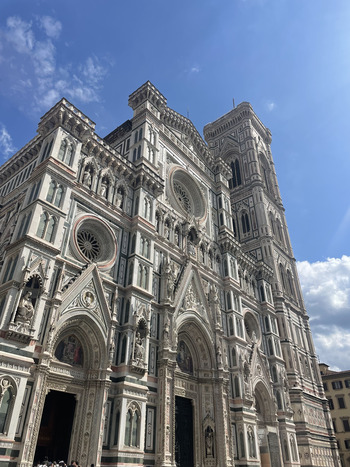
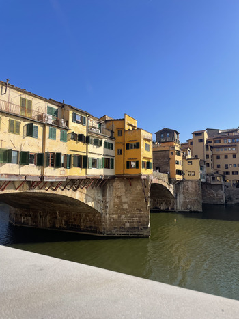
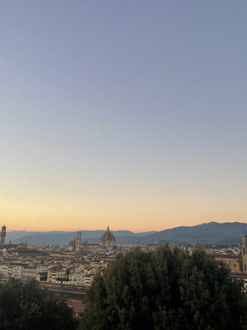
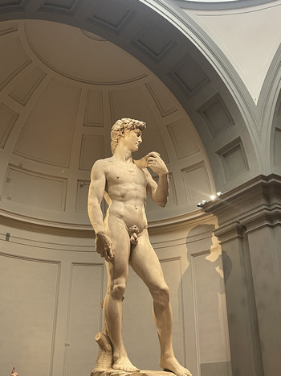
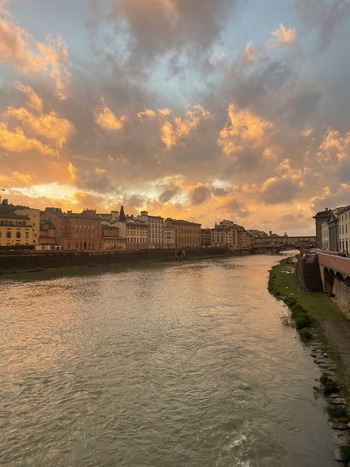

Hi! My name is Kathryn and I just got back from studying in Florence, Italy. I fell in love with the city while there and wanted to share everything I loved about it. Here, I have created a travel guide for the city, explaining all of my favorite places to eat, drink, and explore.
Florence is the capital city of the Tuscany region of Italy. It is filled with lots of history and culture. Once ruled by the Medici, Florence was a center of The Renaissance. Today, Florence keeps many of the relics of this era within it, like the David statue done by Michelangelo and the San Lorenzo Church.
Florence is also known for its delicious food and drink. It's historic dishes, like Ribolita and Pappa al Pomodoro, are staples in Tuscan food culture. In addition to the food, Tuscan wine is known worldwide. The wine is made from the Sangiovese grapes that come from the region. Locals drink wine with every dinner, even noting that they can't have a dinner without it.
Check out some of my favorite pictures of the city below! Or explore my favorite sites and restuarants above!




